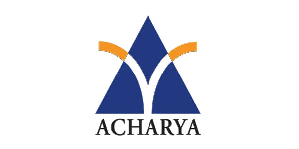
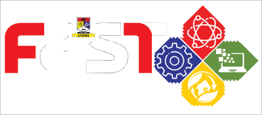

FAKULTAS SAINS DAN TEKNOLOGI
Membentuk generasi digital unggul, kreatif, dan adaptif menghadapi era industri 5.0
Membentuk generasi digital unggul, kreatif, dan adaptif menghadapi era industri 5.0




Tentang Fakultas Sains dan Teknologi
Seperti fakultas lainnya di Universitas Prima Indonesia (UNPRI), Fakultas Sains dan Teknologi berkomitmen untuk mencetak lulusan yang terampil, profesional, dan mampu bersaing di tingkat internasional. Fokus utama kami adalah pada Socio-Technopreneurship yang inovatif dan adaptif, dengan target menciptakan talenta kelas dunia pada tahun 2030.

Menjadi fakultas yang unggul dalam bidang Technopreneurship yang Inovatif, Adaptif dan berdaya saing internasional pada tahun 2030.


Dekan

wakil Dekan 1

Wakil Dekan 2

Wakil Dekan 3
Program Studi Teknik Informatika berfokus pada pengembangan perangkat lunak dan teknologi komputer, meliputi pemrograman, jaringan, kecerdasan buatan, dan keamanan siber.
Program Studi Sistem Informasi mempelajari penerapan teknologi informasi untuk mendukung proses bisnis dan pengambilan keputusan dalam organisasi atau perusahaan.
Program Studi Teknik Elektro mempelajari sistem kelistrikan, elektronika, telekomunikasi, dan energi untuk menghasilkan teknologi listrik yang efisien, aman, dan inovatif.
Program Studi Teknik Industri mempelajari perancangan dan pengoptimalan sistem yang melibatkan manusia, mesin, dan informasi untuk meningkatkan produktivitas perusahaan.
Program Studi Teknik Informatika berfokus pada pengembangan perangkat lunak dan teknologi komputer, meliputi pemrograman, jaringan, kecerdasan buatan, dan keamanan siber.
Program Studi Rekayasa Sipil mempelajari perencanaan, perancangan, pembangunan, dan pemeliharaan berbagai infrastruktur seperti gedung, jembatan, jalan, dan bendungan.
Program Studi Teknik Informatika berfokus pada pengembangan perangkat lunak dan teknologi komputer, meliputi pemrograman, jaringan, kecerdasan buatan, dan keamanan siber.
Berita Terkini
Baca Berita Lainnya
Senin, 20 Oktober 2025
Kampus Terbaik dan Unggul....
Sinergi Pendidikan dan Pemerintah Daerah: UNPRI Perluas Kolaborasi Strategis di Kabupaten Rokan ....

Senin, 20 Oktober 2025
Kampus Terbaik dan Unggul....
Sinergi Pendidikan dan Pemerintah Daerah: UNPRI Perluas Kolaborasi Strategis di Kabupaten Rokan ....

Senin, 20 Oktober 2025
Kampus Terbaik dan Unggul....
Sinergi Pendidikan dan Pemerintah Daerah: UNPRI Perluas Kolaborasi Strategis di Kabupaten Rokan ....
Wujudkan mimpi bersama Fakultas Sains dan Teknologi — tempat di mana ide-ide cemerlang tumbuh menjadi inovasi yang berdampak. Daftar sekarang!

 }})